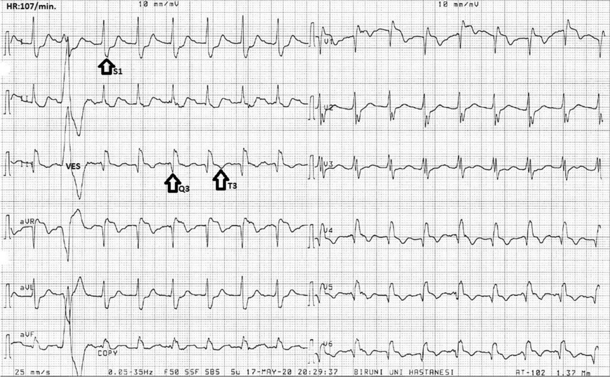
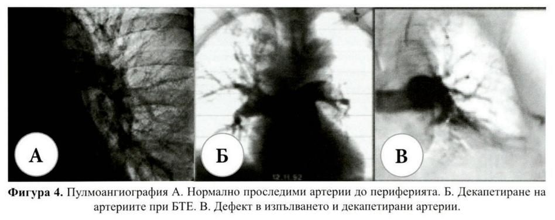

БЕЛОДРОБЕН ТРОМБОЕМБОЛИЗЪМ
Венозният тромбоемболизъм (ВТЕ, VTE, venous thromboembolism) включва дълбоката венозна тромбоза (ДВТ, DVT, deep vein thrombosis) и белодробния емболизъм (БЕ, РЕ, pulmonary embolism).
Определение
- Белодробният тромбемболизъм (БТЕ) представлява запушване на клон на белодробната артерия или клонове, най-често от миграция на тромби, изхождащи от дълбоките вени на долните крайници, на вените в областта на таза.
- Промените в белия дроб са етап в протичането на болестния процес: тромбоза на периферната вена, емболизация на белодробната артерия и инфарциране на белодробния паренхим.
- Много рядко заболяването може да се изяви и като първична (автохронна) тромбоза на белодробните артерии.
- Повече от 95% от белодробните емболии произлизат от дълбоките вени на долните крайници, най-често v. poplitea.
- Значение имат и вените на малкия таз, периутеринния и хемороидален плексус.
- При първичната автохтонна тромбоза белодробната артерия е източник на емболизация в 4.1%.
- При хронично протичащи белодробни заболявания също може да се развие тромбоза.

Класическата триада на Вирхов
Класическата триада на Вирхов представя най-ясно основните механизми, водещи до БТЕ:
- Стаза - при имобилизиране, напреднала възраст, при операция.
- Хиперкоагулация
- Бременност, карцином, хормоно-заместителна терапия
- Полицитемия вера, тромбоцитоза
- Фактор V на Лайден, Протеин С или S дефицит, мутация на фактор 8
- Протромбинова мутация, Анти-тромбин III дефицит
- Хронични белодробни заболявания, сърдечна недостатъчност, предсърдно мъждене
- Съдово възпаление
- Хирургия, разширени вени, тромбофлебит
- Фрактура на долните крайници, изгарания
Рискови фактори
1. Придобити рискови фактори
Могат да бъдат открити при индивиди с БТЕ от анамнезата или физикалното изследване:
- Миелопролиферативни разстройства, тромбоцитопения, индуцирана от хепарин, кожна некроза от кумарини, лупусен антикоагулант, антифосфолипиден синдром, възпалителна болест на дебелото черво, орални контрацептиви, нефротичен синдром, болест на Бюргер.
- Възраст, ХОББ, сърдечна декомпенсация, затлъстяване, продължително пътуване, злокачествени заболявания, химиотерапия, тромботична тромбоцитопенична пурпура, дисеминирано вътресъдово съсирване, пароксизмална нощна хемоглобинурия, бременност, сепсис, травма, синдром на Бехчет, операция, протезни повърхности.
Най-честите транзиторни или обратими рискови фактори за БТЕ са: напреднала възраст, продължителна имобилизация, операции, фрактури, тъканни травми, използване на естрогени, бременност, ХОББ, тютюнопушене и продължително пътуване.
- Рискът от ВТЕ е пет пъти по-висок при бременните жени, отколкото при небременните жени на същата възраст, като 75% от ДВТ настъпват преди раждането, а 66% от БТЕ настъпват след раждането. (Бебето стои ниско и притиска съдове)
- Пероралните контрацептиви повишават риска от дълбок венозен тромбемболизъм трикратно, но базовата честота при млади жени е много ниска.
- Постменопаузалната хормонална заместнтелна терапия също е асоциирана с трикратно повишаване на риска от венозна тромбемболична болест.
- Тютюнопушенето е независим рисков фактор за белодробен тромбемболизъм.
2. Унаследени рискови фактори
Свързани са със състоянието на свръхсъсирваемост (хиперкоагулабилност).
Най-честите генетични аномалии:
- Дефицит на антитромбин, протеин С, протеин S.
- Фактор V Leiden (активиран протеин С резистентност).
- Протромбин 20210А.
- Повечето от тях се унаследяват автозомно доминантно. Индивиди, носещи повече от един унаследяем рисков фактор или един унаследяем и придобит рисков фактор, са с по-висок риск за венозни тромбози.
Повишени нива на плазмената концентрация на хомоцистеина (>15 umol/L) е рисков фактор за венозен тромбемболизъм. Хиперхомоцистеинемията може да се дължи на придобит дефицит на витамини (фолиева киселина, вит. В6, вит. В12) или вроден дефицит на ензими.
Наследствени и придобити фактори могат също да повлияят нивата на фактор VIII и фибриногена.
Патофизиология
Най-често източник на пулмоналните емболи са дълбоките вени на долните крайници и таза. Тромбите се откъсват от тези вени, емболизират белодробните артерии и причиняват промени в хемодинамиката и газовата обмяна.
Промени в хемодинамиката
Определят се от размера на ембола, кардиопулмоналния статус и компенсаторните адаптации. Острият БТЕ води до:
- Анатомична обструкция на съда.
- Освобождаване на пулмонални артериални вазоконстриктори, които водят до увеличение на пулмоналното съдово съпротивление и дяснокамерно (ДК) следнатоварване.
- Внезапното увеличаване на ДК следнатоварване може да предизвика ДК дилатация и хипокинезия, трикуспидална регургитация и накрая ДК недостатъчност.
- Намалененият ДК дебит и изместването на междукамерната преграда наляво в диастола затруднява левокамерното пълнене.
- Бърза прогресия до системна артериална хипотензия и сърдечен арест.
- Намаленото системно артериално налягане води до намалена коронарна перфузия и намалена доставка на кислород до деснокамерния миокард.
Промени в газовата обмяна
Механизмите, водещи до влошаване на газовата обмяна, включват:
- Нарушено отношение вентилация/перфузия.
- Увеличение на мъртвото пространство за сметка на алвеоларното мъртво пространство (зоната периферно от емболията се вентилира, но не получава функционален кръвоток).
- Дясно-ляв шънт:
- (а) интрапулмонален шънт (отваряне на артерио-венозни анастомози);
- (б) интракардиален шънт (отваряне на foramen ovale при масивен БТЕ).
- Редуцирано кислородно насищане в смесената венозна кръв.
Артериалната хипоксемия и увеличеният алвеоларно-артериален градиент [(A-a)pO2] са двете най-важни нарушения на газовата обмяна.
Хипервентилацията може да допринесе за развитието на хипокапния и респираторна алкалоза.
Белодробен инфаркт се среща рядко, тъй като са налице три източника на кислород (клонове на белодробната артерия, бронхиална артерия и дихателните пътища). Необходимо е да бъдат нарушени 2 от тези 3 източника на кислород, за да се достигне до белодробен инфаркт. Инфаркт е по-вероятно да се получи при пациенти със съществуваща левокамерна недостатъчност или белодробно заболяване.
На Фиг. 2 са представени стъпките в дяснокамерното обременяване и последващото лявокамерно обременяване.

Класификация
Клиничната класификация на тежестта на остър БЕ се базира на изчисления ранен риск от смърт поради БЕ, определящ се от вътреболничната или 30-дневната смъртност. Базира се на клиничния статус на пациента при представянето му:
- Високорисков БТЕ се подозира или потвърждава при наличие на клинична нестабилност.
- Невисокорисков БТЕ - при отсъствие на клинична нестабилност.
Клиничната нестабилност може да се представи със следните клинични прояви:
- Необходимост от кардиопулмонална ресусцитация.
- Обструктивен шок: систолно артериално налягане < 90 mmHg или необходимост от вазопресори да се постигне артериално налягане ≥ 90 mmHg, въпреки адекватното пълнене и хипоперфузия на органите (влошен психичен статус; студена, лепкава кожа; олигурия/анурия; увеличен серумен лактат).
- Персистираща хипотензия: систолно артериално налягане < 90 mmHg или спад на систолното артериално налягане ≥ 40 mmHg, за повече от 15 min, което не е причинено от новопоявила се аритмия, хиповолемия или сепсис.
Според големината на ембола БТЕ се дели на:
- Масивен: Проявен клинически с шок и/или хипотония (дефинирана като систолично артериално налягане < 90 mmHg или спад в налягането от 40 mmHg за > 15 мин, в случай че не е причинен от нововъзникнала аритмия, хиповолемия или сепсис). Масивният БТЕ е една от причините за внезапна сърдечна смърт.
- Немасивен: Проявена клинически без промяна в артериалното налягане, протичащ предимно с респираторни симптоми (с или без инфаркт), (респективно оклузия под 50% от артерия пулмоналис или оклузия на по-малки клонове с общ диаметър < 50%).
- Субмасивен: Подгрупа от пациенти с немасивен БТЕ, които могат да бъдат идентифицирани посредством ехокардиографски признаци на дяснокамерна хипокинезия или дилатация за остро дясно камерно обременяване.
По начин на протичане БТЕ се класифицира като:
- Остър.
- Рецидивиращ БТЕ (хронично протичане): Свързва се с несвоевременно диагностицирана БТЕ или персистиращ източник (често неоплазми). Хронично рецидивираща микроемболична БТЕ е най-трудна за диагноза – налице са хронично белодробно сърце, светлеещ бял дроб, неясно начало, понякога синкоп, световъртеж, уморяемост, задух.
За ежедневната практика най-често се използва следната обобщена класификация:
- А. Кардиална форма: 1. Остра; 2. Подостра; 3. Хронична
- Б. Белодробна форма:
- Обикновена белодробна: а. Безинфарктна; б. Инфарктна
- Микротромбемболична
- В. Хронична рецидивираща форма: рецидивираща инфарктна и рецидивираща микротромбемболична.
Клиника
Тя се определя от формата на белодробния емболизъм, големината на ембола, възрастта на болния и придружаващите заболявания.
Типичната тетрада се състои от:
- Тахипнея
- Диспнея
- Тахикардия
- Хипотония
- Към тях може да се добави хемоптиза и гръдна болка.
Острият БТЕ обикновено се представя по 4 главни начина:
- Пулмонален синдром: типично се представя с плеврална болка със или без хемоптиза, локални признаци, като плеврално триене също могат да са налице.
- Изолирана диспнея: остра диспнея без кръвохрак или циркулаторена нестабилност при пациент с рискови фактори.
- Хемодинамична нестабилност при пациенти без сигнификантни предходни заболявания: хипотензия, която може да бъде съпътствана от загуба на съзнание. Получава се при централен и масивен БЕ, който причинява дясна сърдечна недостатъчност.
- Хемодинамична нестабилност при лош резерв: обикновено при възрастни пациенти с ограничен кардиореспираторен резерв, малки белодробни емболи могат да бъдат катастрофални.
1. Кардиална форма на БТЕ
1.1. Остро протичане
- В 70-80% смъртта настъпва моментално или за няколко часа.
- Симптоми: Мълниеносно се развива тежък задух, студена пот, прекордиална болка, гадене, смъртен страх.
- При оглед: Изразена цианоза, тахипнея, конвулсии, разширени шийни вени, кръвохрак.
- При палпация: Филиформен пулс, студени крайници, увеличен и болезнен хепар, тромбофлебит или флеботромбоза.
- Перкусия/Аускултация: Разширена дясна сърдечна граница с акцентиран II тон на белодробната артерия, бронхоспазъм, хъркащи, мъркащи хрипове и плеврален излив.
- Болка в гърдите (52-86%): Свързана с функционална коронарна недостатъчност, остро разширение устието на белодробната артерия, исхемия на белодробната тъкан.
- Церебрален синдром: Свързан с мозъчна хипоксична енцефалопатия – психомоторно възбуждение, менингиална симптоматика, епилепсия, полиневрити.
- Абдоминален синдром: Коремна болка, дължаща се на остро разтягане на глисоновата капсула на черния дроб и рефлекторно нарушение на мезентериалното кръвообращение.
1.2. Подостро и Хронично протичане
- Подостро: Няколко седмици без изразена симптоматика, завършва фатално поради деснокамерна сърдечна недостатъчност.
- Хронично: Свързано с голям тромб с прогресивно увеличаване на размерите. Налице е пристъпно изявена клиника на плеврална болка, задух, тахикардия, бронхо-обструкция. Смъртта настъпва от развитие на белодробна хипертония и деснокамерна недостатъчност.
2. Белодробна форма на БТЕ
Клиниката е вариабилна и не е драматична.
Безинфарктна форма
- Не се установяват симптоми на изразена белодробна и сърдечна недостатъчност.
- Понякога се наблюдават болка, хипотония, тахикардия, кашлица.
Инфарктна форма
- Болката е внезапна, но не зад гръдната кост, а в съответната гръдна половина (понякога само дискомфорт).
- Задух се наблюдава в 80-90% (без ортопнея).
- Други симптоми: Кашлица, тахикардия, цианоза, кръвохрак в 10-56%, повишена температура.
- Физикално изследване: Влажни хрипове и плеврален излив.
- Подозиране на БТЕ: При необяснимо температурно състояние при болни на постелен режим, при внезапен задух с неясна генеза, внезапна аритмия при преминаване от постелен към нормален режим.
Клинична оценка на БТЕ
- В 90% съмнението възниква от клинични симптоми като диспнея, болки в гърдите или синкоп - поотделно или в съчетание.
- Въвеждането на метода "оценка на клиничната вероятност" подобрява клиничната оценка на пациента и позволява по-добра интерпретация на другите диагностични изследвания.
- Основно изискване на метода е наличието на:
- задух и/или тахипнея, с или без плевритен тип гръдна болка и/или хемоптое, както и на два други феномена:
- а. липса на друго състояние, което би могло да обясни оплакванията
- б. наличие на рискови фактори.
- Вероятност:
- Висока: Твърдения а и б са изпълнени.
- Междинна: Едно от твърденията е вярно.
- Нискa: Нито едно условие не е изпълнено.
Изследвания
- Повишени са стойностите на изоензимите на ЛДХ (специално ЛДХ1, ЛДХ5 при нормални стойности на АСАТ).
- Повишени са стойностите на индиректния билирубин, ускорено е СУЕ, установява се левкоцитоза с олевяване.
- Намален е броят на тромбоцитите, увеличени са стойностите на фибриногена, наличие на фибриндеградационни продукти в серума.
- В урината: 5-хидроксииндолоцетна киселина - разпаден продукт на серотонина.
Д-димер в диагностиката на БТЕ
- Механизъм: Образува се при лизиране на прекръстосан фибрин от плазмина.
- Представлява директен маркер за фибринолитична активност и индиректен маркер за тромбообразуване.
- Тъй като повишението на Д-димера е неспецифично (установява се при възпаление, тумори, напреднала възраст, постоперативно. бременност и др.). резултатите имат ниска позитивна предиктивна стойност.
- Значение: Негативният резултат (< 500 ng/ml) може да изключи БТЕ.
- Диагностичните тестове за Д-димери следва да имат висока чувствителност (над 90%) за БТЕ, с цел намаляване на фалшиво отрицателните резултати и достатъчно висока предиктивна стойност на отрицателния резултат (близка до 100%) за изключване на последваща венозна тромбоза.
Артериални кръвни газове
- Могат да бъдат нормални.
- Често се наблюдават хипоксемия и хипокапния (поради хипервентилация) с увеличен А-а градиент (> 20 mmHg).
Електрокардиография (ЕКГ)
- При остро БТЕ: Завъртане на оста надясно, поява на S1Q3T3 (при повечето пациенти).
- Дълбока S-вълна в I отвеждане.
- Q-вълна в III отвеждане.
- Инверсия на Т-вълната в отвеждане III.
- Механизмът на S1Q3T3 е свързан с дяснокамерно претоварване, което води до промяна на електрическата ос на сърцето надясно и поява на признаци за десен сърдечен стрес.
- Р-пулмоналe: Висока и заострена Р вълна над 2.5 мм (израз на ДП обременяване).
- ДК ангажимент: Поява на непълен или пълен ДББ (Десен Бедрен Блок) и негативни Т-вълни от V1-4.
- В други случаи синусовата тахикардия може да бъде единствения белег на БТЕ. Не са редки случаите на пристъпно предсърдно мъждене.

Фигура 3. ЕКГ при БТЕ
Диагноза на Дълбоката Венозна Тромбоза (ДВТ)
- Асимптомна ДВТ се наблюдава при над 70% от пациентите с доказана симптомна БТЕ.
- Диагностицирането на ДВТ с подозиран БТЕ е достатъчно доказателство за започване на антикоагулантна терапия без последващи изследвания.
- Контрастна венография: "Златен стандарт", но се прилага рядко (инвазивна и трудно осъществявана при остро болни пациенти).
- Ултрасонография: Липса на пълна компресия на вената при прилагане на налягане е добре валидизиран критерий.
Образни изследвания
Рентгеново изследване
- Признаци на остро белодробно сърце:
- Разширение на дясната граница на сърцето
- Разширение на конуса на белодробната артерия
- Разширение на горната празна вена.
- Нарушен кръвоток в a. pulmonis:
- Разширени хилуси
- Симптом на олигемия - намален съдов рисунък, увеличена просветляемост на паренхима
- Огнищни сенки
- Дисковидни ателектази - едностранни или двустранни.
- Белодробен инфаркт:
- Неясен инфаркт тип "гнездо"
- Клиновидно уплътнение на белодробната тъкан.
- Лобарна пневмония.
- Оток на белите дробове, тип тумор.
- Кръгли и овални сенки (3-4 cm) на сагиталните рентгенограми.
- Плеврални изливи: Малки, локализирани в голямата плеврална кухина.
Ехокардиография (ЕхоКГ)
- Осигурява критична информация за физиологичните ефекти от БТЕ.
- Индиректни ЕхоКГ и Доплер ЕхоКГ признаци:
- Повишено систолно налягане в белодробната артерия: скъсено време до пиковата скорост в систола в изхода на дясна камера с PW Доплер (АТ)
- Повишена скорост на трикуспидалния регургитационен кръвоток (> 3-3,5 m/sec)
- Дилатирана долна празна вена с намален инспираторен колапс (< 40%)
- Дяснокамерна дисфункция/дилатация.
- Сравнявайки ЕхоКг и Доплер ЕхоКг параметри:
- Дяснокамерен теледиастолен диаметър/Лявокамерен теледиастолен диаметър > 0,5
- Дяснокамерна теледиастолна площ/Лявокамерна теледиастолна площ > 0,6 - най-силен предиктор на острия дяснокамерен стрес
- Дяснокамерен теледиастолен диаметър > 27 mm и систолно белодробно артериално налягане > 35 mmHg
- Директни ЕхоКГ признаци:
- Визуализиране на проксимални тромби в белодробната артерия или десните сърдечни кухини.
- Директната визуализация може да се осъществи чрез трансторакална или по-лесно с трансезофагиална ЕхоКГ.
- Възможно е разграничаването на остър от хроничен БТЕ по ЕхоКГ белези
- При наличие на дебелина на свободната стена на дясна камера > 5 mm, скорост на трикуспидалния регургитационен кръвоток > 3,7 m/sec, едновременно с наличие на дилатирана кухина на дясна камера и нормално движение на междукамерната преграда и нормален инспираторен колапс на долната празна вена, автори индентифицират 85 % от пациентите със субакутен масивен БТЕ.
- Негативният ехографски резултат не изключва БТЕ.
- ЕхоКГ може да съучаства в определяне на реперфузионната стратегия (антикоагуланти, тромболиза, катетър фрагментация или хирургическа емболектомия).
- Чрез серийни ЕхоКГ оценки може да се проследи резултатът от индивидуалната терапия на пациентите
Белодробна сцинтиграфия
- Неинвазивна и безопасна диагностична методика.
- За перфузионна диагностика венозно се инжектират макроагрегати, маркирани с 99m-технеций (Тс).
- В случаите на оклузия на разклонения на белодробната артерия, капилярната част от периферно лежащото съдово русло няма да получи такива частици, което ще доведе до “студена” зона на съответните образи.
- Класификация:
- Отхвърляне на БТЕ (нормална).
- Доказан БТЕ (висока вероятност): Минимум един сегментен перфузионен дефект или перфузионен дефект от по-висок порядък с локално нормална вентилация или нормална находка на рентгенография на гръден кош.
- Нито отхвърлен, нито доказан БТЕ (недиагностична).
Спирална Компютърна Томография (сКТ)
- Основен диагностичен метод днес.
- Директни белези: Пряко визуализиране на интралуминален дефект (тромб) под формата на хиподензна зона на фона на контрастирания съд. Тромбът може да е свободен или фиксиран към стената. При пълна обструкция луменът може да е нормален/дилатиран, но дистално няма контрастна материя.
- Метод на избор при суспектна белодробна тромбемболия е компютър-томографска ангиопулмография, комбинирана с изследване на вените на таза и долните крайници.
- Икономически изгоден метод (заедно с Д-димер тестовете).
- Срокове: Образните изследвания трябва да бъдат извършени до 1 час при масивен и до 24 часа при немасивен БТЕ.
Белодробна ангиография
- Референтен диагностичен метод (златен стандарт).
- Прилага се за пациенти, при които неинвазивната диагноза не носи информация.
- Вероятно БТЕ с нормална ангиограма не се лекува с антикоагуланти. (Фиг. 4)

Диагнозата се поставя въз основа на анамнестичните данни, физикалното, лабораторното изследване, данните от ЕКГ, рентгеновото и сцинтографско изследване.
Диагностични стратегии
- Целта на първите диагностични алгоритми е била повече да потвърди, отколкото да от хвърли БЕ.
- Новите диагностични алгоритми целят да идентифицират пациенти, които вероят но нямат БЕ и съответно нямат нужда от лечение.
- За тази цел са предложени и утвърдени различни комбинации от клинична оценка, изследване на D-димер в плазмата и образни методи (МДКТ и ехокардиография). Диагностичните алгоритми при суспектен БЕ с или без шок или хипотония са представени на Фиг. 5 и Фиг. 6

Фигура 5. Диагностичен алгоритъм при пациенти със суспектен високорисков БЕ, т.е. представящи се с шок или хипотония

Фигура 6. Диагностичен алгоритъм при пациенти със суспектен невисокорисков БЕ. т.е. представящи се без шок или хипотония.
Диференциална диагноза
От значение е отчитането на клиничния фон (рискови фактори за БТЕ, предшестваща стенокардия, съдов инцидент) и характерът на болката.
При БТЕ тя е остра, постоянна, без ирадиация, свързана с дишането, а при инфаркт на миокарда - вълнообразна, с ирадиация, несвързана с дишането, има акроцианоза и няма кръвохрак и плеврално триене.
От значение са и биохимичните изследвания (напр. тропонини, креатинкиназа за ИМ).
Лечение
Остра циркулаторна недостатъчност
- Острата циркулаторна недостатъчност е водеща причина за смърт при масивен БТЕ.
- Системната хипотензия или повишеното средно дяснокамерно налягане намаляват коронарното перфузионно налягане в дясна камера и кръвоснабдяването на миокарда.
- Инотропни средства:
- Добутамин и допамин се използват при пациенти с нисък сърдечен индекс и нормално кръвно налягане.
- В тези случаи се отчита сигнификатно нарастване на сърдечния индекс, без значима промяна в сърдечната честота, артериалното налягане и средното белодробно артериално налягане.
- Вливане на течности: Ползата е противоречива; обемът не трябва да надхвърля 500 мл.
- През цялото време се препоръчва дозирана кислородотерапия.
Лечение с Хепарини и Тромболитици
1. Лечение на Масивна форма на БТЕ:
- Масивният БТЕ е показание за фибринолитична терапия.
- Тромболитичната терапия може да се приложи до 14-ия ден от началото на оплакванията.
- Начало: Болусна доза 5 000 – 10 000 IU Нефракциониран хепарин (НФХ), последвана от поне 1250 IU/h в постоянна венозна инфузия за 5-7 дни.
- Фибринолиза: Основен фибринолитик е rtPA - Alteplase (Actilyse): i.v. 10mg/2min + 90mg/2h.
- При сърдечен арест: Един флакон Alteplase (50mg) i.v. струйно.
- След фибринолиза: Венозна инфузия с НФХ 1250 IU/h за 5-7 дни.
- Контрол: аРТТ на 6 часа (увеличаване 1,5 – 2,5 пъти).
- Други алтернативни методи:
- Механична фрагментация, аспирация на тромби или по-често фармакомеханичен подход, съчетаващ механична или ултразвукова фрагментация на тромба с in situ намалена доза наромболиза.
- Mеханичната реперфузия, която се основава на поставяне на катетър в белодробната артерия.
2. Лечение на Немасивна форма на БТЕ
- Нефракциониран хепарин (НФХ): Болус 5 000 – 10 000 IU НФХ, последван от поне 1250 IU/h в постоянна венозна инфузия за 5-7 дни.
- НМХ (Нискомолекулни хепарини): След болусната доза НФХ може да се започне НМХ.
- Nadroparin (Fraxiparine) или Fraxiparine Forte, Enoxaparin (Clexane), Dalteparine (Fragmin); Reviparine (Clivarine)
- Алтернатива: Fondaparinux (Arixtra) – селективен инхибитор на Ха фактор.
- Контрол: Необходим е контрол на броя на тромбоцитите (риск от хепарин-индуцирана тромбоцитопения).
Перорална Антикоагулантна Терапия (ПОАТ)
- Начало: Трябва да започне колкото е възможно по-рано (първите 72 часа).
- Антагонисти на Витамин К (Acenocumarol/Sintrom)
- Риск: При висока начална доза Acenocumarol може да настъпи ранен хиперкоагулационен ефект.
- Препоръчителна начална доза: 3mg дневно.
- Изключване на директния антикоагулант: При постигане на INR 2–3 в 2 последователни дни.
- Поддържане на INR 3–3,5 при рецидивиращ БТЕ.
- Добра алтернатива на витамин К антагонистите са новите перорални антикоагуланти, като Rivaroxaban.
- Продължителност на лечение с Vit К антагонисти:
- 3 месеца: При реверзибелен рисков фактор.
- Поне 6 месеца: Идиопатичен БТЕ.
- Постоянно (доживот): Рецидивиращ БТЕ или персистиращи рискови фактори.
- Схема за лечение:
- При Антифосфолипиден синдром: Препоръчват се само Vit К-антагонисти, новите перорални антикоагуланти не са показани.
- При пациенти без карцином: Могат да бъдат използвани редуцирани дози: Apixaban 2 пъти по 2.5 mg или Rivaroxaban 10 mg.
- При активен карцином: Препоръчват се НМХ пред Vit К антагонистите за 6 месеца. Edoxaban и Rivaroxaban са алтернатива на НМХ, когато карциномът не е на гастро-интестиналния тракт.
Други интервенционални и хирургични методи
- Механична реперфузия: Поставяне на катетър в белодробната артерия за механична фрагментация, аспирация на тромби или фармакомеханичен подход (фрагментация + намалена доза тромболиза in situ).
- Хирургична емболектомия: Показана при пациенти с масивен БТЕ, които са противопоказани за тромболитично лечение или при неефективна фибринолиза.
- Венозни филтри на долната празна вена (Vena Cava Filters):
- Показания: Пациенти, при които антикоагулацията е контраиндицирана или при рецидивиращ БТЕ, въпреки адекватната антикоагулация.
- Недостатък: Филтрите увеличават инцидентите на дълбока венозна тромбемболия (ДВТ).
Профилактика
- Предпочитана: Първичната профилактика.
- Вторична профилактика: Запазва се за пациенти, при които първичната е контраиндицирана или неефективна.
- Пациентите, подлежащи на хирургична операция се подразделят на следните рискови групи:
| Рискова група | Характеристика | Риск без профилактика | Препоръка |
| Нисък риск | Пациенти < 40 г.
без рискови фактори
обща анестезия < 30 мин
малка абдоминана или торакална операция | Проксимална ДВТ: 1,0%;
Фатална БТЕ: < 0,01%. | Не се препоръчва профилактика. |
| Среден риск | Пациенти > 40 г.
с нужда за обща анестезия > 30 мин
и иматедин или повече рискови фактори
| Проксимална ДВТ: 2–10%;
Фатална БТЕ: 0,1–0,7%. | Дозиран спрямо килограмите НМХ. |
| Висок риск | Пациенти > 40 г., подлежащи на
операция за малигнено заболяване или отропедична процедура на долен крайник
с обща анестезия > 30 мин
и имат инхибиторен дефицит или други рискови фактори | Проксимална ДВТ: 10–20%;
Фатална БТЕ: 1,0–5,0%. | Дозиран спрямо килограмите НМХ. |
Прогноза
- Смъртността, асоциирана с БТЕ, е подценена.
- Тя надхвърля 15% в първите 3 месеца след поставяне на диагнозата.
- При 25% от пациентите клиничната манифестация на БТЕ е внезапната смърт.
- Острата белодробна емболия остава една от основните причини за смъртност.
Допълнителни инфо:
- Белодробната емболия е една от водещите причини за смъртност сред хоспитализираните пациенти. Венозната тромбоемболия (включително белодробна емболия) е отговорна за значителен дял от вътреболничната смъртност, особено при пациенти с допълнителни рискови фактори като онкологични заболявания, сърдечна недостатъчност и обездвижване
- "Тоалетен синдром" - клинична ситуация, при която остра белодробна емболия се проявява по време на дефекация. Механизмът се свързва с изпълнението на Валсалва маньовър по време на дефекация, което води до внезапно повишаване на интраабдоминалното и интраторакалното налягане. Това може да улесни откъсването на венозен тромб (най-често от дълбоките вени на долните крайници) и миграцията му към белодробната циркулация, предизвиквайки остра емболия.